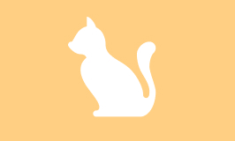

Cat Care Essentials

Empower yourself with the knowledge to provide top-notch care for your feline companion. Cat Care Essentials can help you:
- Discover resources on feline health, behavior, and wellness tailored to your cat's unique needs.
- Learn about proper nutrition, grooming tips, and preventative care strategies.
- Understand your cat's behavior and emotional needs to build a stronger bond.
- Access expert advice on creating a safe and stimulating environment for your cat.
- Stay up to date with seasonal care tips to ensure your cat's well-being year-round.
Purr-sonality Quizzes

Engage with fun and insightful quizzes that deepen your connection to cats. Purr-sonality Quizzes can help you:
- Discover which cat breed aligns with your personality and lifestyle.
- Uncover interesting traits about various breeds and their care requirements.
- Share quiz results with your friends to spark cat-themed conversations.
- Learn tips for welcoming a new cat into your home based on your ideal match.
- Encourage interaction with your cat by understanding their unique traits.